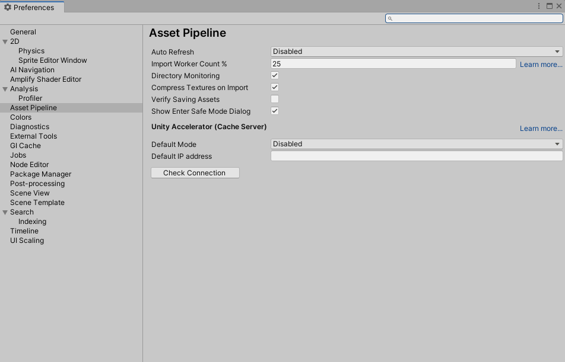
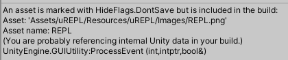

Unity问题记录
Unity问题记录
本文章主要记录Unity碰到的各种记录。 我只能说Unity还是各种隐藏坑啊！！
Unity AutoRefresh问题
Unity2021之后将General中的Auto Refresh搬迁到了AssetPipeline中。官方给出，可以像之前一样，通过设置Auto Refresh的值来控制修改脚本的时候是否自动导入，如下。

但是发现设置了之后仍然没有生效。
通过查找，看到了官方论坛的讨论：
其中最后给出了修复方式，类似于unity 5.4时代disable auto refresh一样的事情。去注册表中修改如下的值：
HKEY_CURRENT_USER/Software/UnityTechnologies/UnityEditor5.x/kAutoRefresh = 0 HKEY_CURRENT_USER/Software/UnityTechnologies/UnityEditor5.x/kAutoRefreshMode = 0
由此可以看到，这个实际上是Unity版本迭代的问题。如果机子上有老的Unity引擎，那么其Auto Refesh控制kAutoRefresh的01值。如果设置为enable这个值将为1。使得Unity最新版本不能控制自动刷新。所以这里重新设置一下就好了。
脚本图标打包问题
之前用github的一个unity uREPL项目插件。打包的时候出现如下报错。

神奇的是，启动unity后第一次打包的时候不会出现错误。但是第二次执行打包必定报错。
网上查找发现有很多情况会触发这个错误。例如Editor下资源被错误放在运行时资源目录下，Editor下脚本被加入打包流程等。而这个报错资源是一个图片资源，放在了uREPL的Resources下面。随后我发现是因为这个图标被ScriptIcon引用导致报错。
所以清除所有引用该资源Script的ScriptIcon或者删除这个图片就可以。但是手动删除ScriptIcon非常麻烦，要逐个脚本点击，设置为None，然后再经过编译。直接删除图片资源可以快速解决问题，但是scripticon文件数据实际上记录在脚本对应的meta文件中（记录在icon字段内）。这样会在Script的meta文件中留下脏数据感觉不是很好。
强迫症决定写脚本批量清楚ScriptIcon资源。但发现似乎没有类似结构，经过研究发现如下的方式可以清除，估记录一下。
public void ClearMonoScriptIcon()
{
// 查找目标路径下所有Asset资源
var asset_guids = AssetDatabase.FindAssets("", new string[] { path });
foreach (var guid in asset_guids)
{
var asset_path = AssetDatabase.GUIDToAssetPath(guid);
// 加载为一个MonoImporter 这个类型专门用来导入脚本
var mono_importer = AssetImporter.GetAtPath(asset_path) as MonoImporter;
if (mono_importer != null)
{
mono_importer.SetIcon(null);
mono_importer.SaveAndReimport();
}
}
}